|
Foto's van verschillende spellenavonden in 2009 |
| 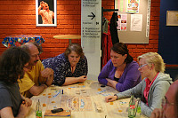 Aerjen, Marc, Annelies, Rozewitha en Lieke |
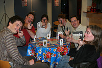 Hands up! |
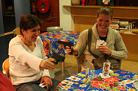 Sharon en Esther bij Cash and Guns |
Aerjen bij Boerenbridge |
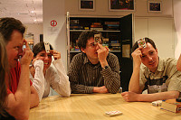 Kopkaarten van Arjo, Sharon, Martijn en Quincy |
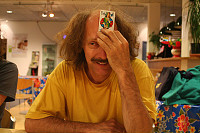 De boer van Marc |
| 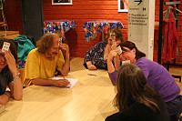 Boerenbridge blijft leuk |
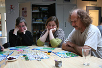 Hard nadenken bij Puerto Rico door Tina, Jasna en Marc |
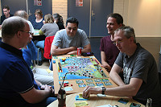 Funkenschlag Amerika |
| 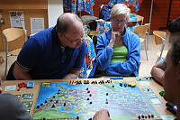 Onno denkt na over zijn zet, Lieke kijkt toe |
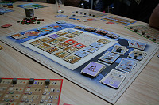 Goa, het speelbord |
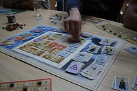 Goa, slimme zet? |